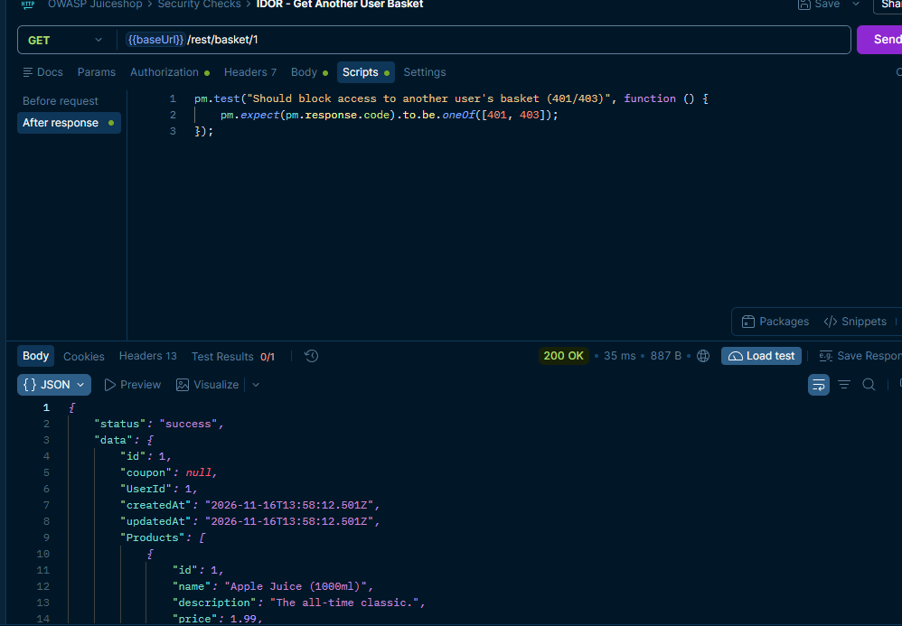
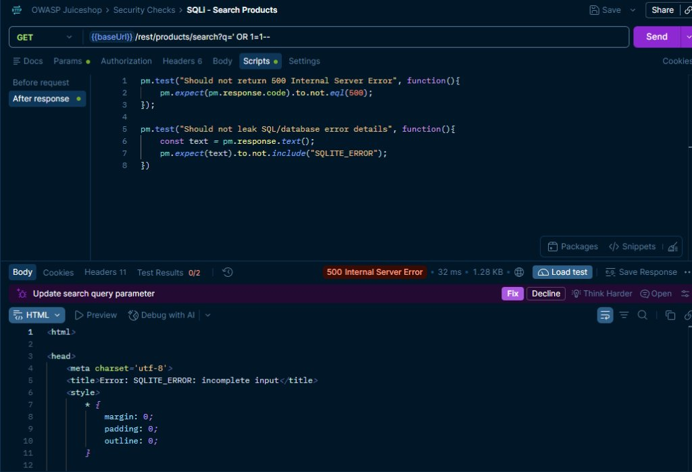
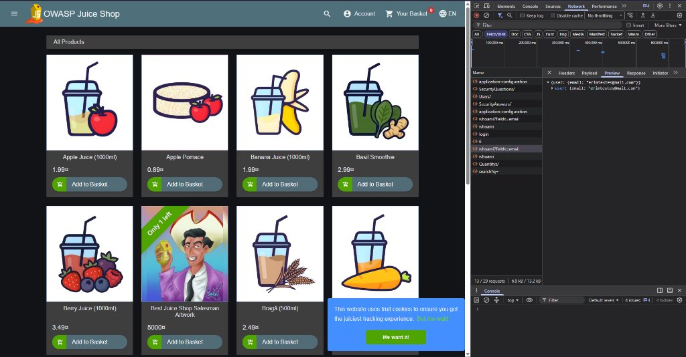

Cinco falhas reais provadas via Postman
Mapeamento de rede, testes negativos e auditoria de segurança no Juice Shop.
pm.expect(pm.response.code).to.be.oneOf([401, 403])
{"id": 1, "UserId": 1, "Products": [{"name": "Apple Juice"}]}
35 ms
Cinco defeitos documentados
Três falhas funcionais e duas brechas de segurança reproduzidas em ambiente Docker local.
-
Quantidade negativa quebra o carrinho com erro 500
Envio de valor negativo não é validado antes de gravar no SQLite.
POST /api/BasketItems/ (500)Ler relatório -
Busca no front-end envia parâmetro vazio
Interface baixa o catálogo completo de 5.5 kB e filtra no navegador.
GET /rest/products/search?q=Ler relatório -
Cadastro aceita senha numérica simples
Ausência de política mínima de entropia na criação de conta.
POST /api/Users/ (201)Ler relatório -
IDOR expõe carrinho de outro usuário
API valida presença do token JWT mas não checa posse do recurso.
GET /rest/basket/1 (200)Ler relatório -
Injeção SQL vaza erro interno do SQLite
Aspa simples não sanitizada interrompe a query e revela o banco.
GET /rest/products/search?q=' OR 1=1--Ler relatório
Capturas reais da execução
Evidências coletadas no Postman e no Chrome DevTools durante os testes.

GET {{baseUrl}}/rest/basket/1

Error: SQLITE_ERROR: incomplete input

POST /rest/user/login
Quatro fluxos mapeados
Engenharia reversa dos contratos de API via inspeção de rede no navegador.
| Fluxo | Rota | Status | Comportamento verificado |
|---|---|---|---|
| Cadastro | POST /api/Users/ |
201 Created |
Cria usuário e bloqueia e-mail duplicado com 400. |
| Login JWT | POST /rest/user/login |
200 OK |
Retorna Bearer token e ID do carrinho. |
| Busca | GET /rest/products/search?q= |
200 OK |
Lista produtos; quebra com 500 se receber aspa simples. |
| Adicionar item | POST /api/BasketItems/ |
200 OK |
Exige Bearer token; retorna 500 com quantidade negativa. |
| Ver carrinho | GET /rest/basket/{bid} |
200 OK |
Barra requisição sem token (401), mas permite IDOR entre IDs. |
Assertions automatizadas em JavaScript
O script de pós-resposta valida o contrato do login e injeta o token JWT e o ID do carrinho direto no Environment do Postman.
pm.test("Returns JWT token and bid", function () {
const json = pm.response.json();
pm.expect(json.authentication.token).to.be.a("string").and.not.empty;
pm.expect(json.authentication).to.have.property("bid");
pm.environment.set("token", json.authentication.token);
pm.environment.set("bid", json.authentication.bid);
});
pm.test("Should not leak SQL error details", function () {
pm.expect(pm.response.code).to.not.eql(500);
pm.expect(pm.response.text()).to.not.include("SQLITE_ERROR");
});